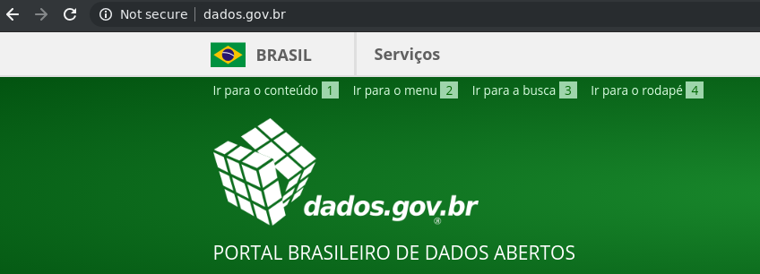

Pós-verdade: a era da desinformação
(e como Python pode nos ajudar)
Turicas aka Álvaro Justen
13 de setembro de 2019
Curitiba/PR 
$ whoami
Turicas, prazer =)
Sigam-me os bons!
## Reflexões e Crenças
## ou: Provocações para Discussão
✈️ ☕🌱👀 = 💖

Software Livre & Python
(desde 2004/2005)


# Agenda
- Pós-verdade
- O que é e exemplos
- O que podemos fazer?
- Jornalismo de dados
- Dados abertos
- Exemplos (ao vivo)
- [rows](https://pypi.org/project/rows)
- [Brasil.IO](https://brasil.io/)
## Enquete
- Conhece o conceito de pós-verdade?
- Primero congresso de Python?
- Começando com Python?
- Trabalha com dados?
- Experiência com dados abertos?
Pós-verdade
“
Distorção deliberada de uma realidade, com finalidade de
criar e modelar a opinião pública e influenciar as
atitudes sociais, em que os fatos objetivos têm menos
influência que os apelos às emoções e às crenças
pessoais.
”
-- Wikipedia
## MODELAR OPINIÃO PÚBLICA
### Movimento antivacinação

Fonte: [BBC Brasil](https://www.bbc.com/portuguese/brasil-41045273)
## CRENÇAS PESSOAIS
### Morte por sarampo (28/08/2019)

Fonte: [Twitter de Leilane Neubarth](https://twitter.com/LeilaneNeubarth/status/1166793024942301184)
## DISTORÇÃO DA REALIDADE
### Declaracões do Presidente do Brasil

Fonte: [Aos Fatos](https://aosfatos.org/todas-as-declarações-de-bolsonaro/)
## INFLUÊNCIA DE ATITUDES
### Queimadas na Amazônia

Fonte: [Globo Rural](https://revistagloborural.globo.com/Noticias/noticia/2019/08/grupo-usou-whatsapp-para-convocar-dia-do-fogo-no-para.html)
## MAXIMIZANDO DESIGUALDADES
## Vieses Algorítmicos

Fonte: [The New York Times](https://www.nytimes.com/2015/07/10/upshot/when-algorithms-discriminate.html)
## Lembra de Cambridge Analytica?

Fonte: [The Guardian](https://www.theguardian.com/news/2018/mar/17/cambridge-analytica-facebook-influence-us-election)
## VISIBILITY COUNTS
### (ou: histórias que te contam)
### DON'T FOLLOW THE HYPE

Fonte: [Forbes](https://www.forbes.com/sites/nicolemartin1/2019/08/30/how-healthcare-is-using-big-data-and-ai-to-cure-disease/)
### Tava bom, diz que ia mudar pra melhor

Fonte: [Tava bom, tava ruim](https://www.youtube.com/watch?v=VX3lz5ph8A0)
## Por quê?
- Estratégia: [Teoria dos jogos](https://es.wikipedia.org/wiki/Teoría_de_juegos)
- Interpretacão: [Hermenêutica](https://es.wikipedia.org/wiki/Hermenéutica)
- "Brain bugs": [Dissonância cognitiva](https://es.wikipedia.org/wiki/Disonancia_cognitiva)
- Alta conectividade (Internet): [3.5 degrees of separation](https://research.fb.com/blog/2016/02/three-and-a-half-degrees-of-separation/)

### (a culpa **NÃO É** da Internet)
## Estratégia
### [Fear, uncertainty and doubt](https://en.wikipedia.org/wiki/Fear,_uncertainty,_and_doubt)
### (2001 / 2016)

Fontes: [The Register](https://www.theregister.co.uk/2001/06/02/ballmer_linux_is_a_cancer/) y [Microsoft Cloud Blogs](https://cloudblogs.microsoft.com/windowsserver/2015/05/06/microsoft-loves-linux/)
## Pós-verdade
- **Muita informação** (impossível consumir tudo)
- **Todos somos ignorantes** sobre alguns temas
- **Visiblidade** *versus* **Credibilidade + transparência**
- **Vieses** cognitivos
## Cérebro bugado:
## Vieses Cognitivos
- Efeito adesão
- Viés de confirmação
- Autoengano
- Dissonância cognitiva
## Cérebro: busca de padrões
### Correlação não implica em Causalidade
### Correlação não implica em Causalidade
### Correlação não implica em Causalidade

[Spurious Correlations](https://www.tylervigen.com/spurious-correlations)
# pessoas > tecnologia?
- Comportamento de grupo *versus* coerência aos valores
- Fins justificam os meios?
- Fanatismo/terapia em grupo
## Cérebro bugado:
## Esquecimento
- Doenças que matam
- Museu do holocausto
- Museu da escravização?
- Museu da ditadura?
## Explorar os Defeitos
### Neuromarketing = Brain bugs + Hacking

## Entendendo que somos parte do problema
- Produzimos tecnologia: temos **responsabilidade por sua utilização**
- Educação tecnológica
## Rede de confiança
- Confiamos **sem verificar**
- Necessitamos de educação para os meios:
- Vivemos uma **guerra de narrativas**
- Verificar, verificar, verificar
- Não dar visibilidade às mentiras
- Dar visibilidade aos fatos/datos (referências/fontes originais)
## Método Científico
### Algoritmo
- Faça uma **observação** sobre um fenômeno
- Cria uma **hipótese** sobre
- **Teste** a hipótese
- Escreva **conclusões** sobre
## Método Científico [2]
- Sistematização:
- Checagem/reprodução
- Previsibilidade/extrapolação
- Falseabilidade/contestação
- Justiça/parcialidade
- Exemplos:
- Teoria da Evolução (Charles Darwin)
- Teoria da relatividade geral (Albert Einstein)
Pseudociência: finge que é ciência, mas não é

- O conhecimento humano não precisa ser 100% científico
- É nociva
- (tem pelo menos mais 3 bem conhecidas)
## Furar Bolhas
- Mais empatia
- Menos "não dialogo com X"
- Grupos *diferentes* não são *inimigos*
- Pragmatismo
Dados Abertos
“
Dados abertos são dados que podem ser livremente usados,
reutilizados e redistribuídos por qualquer pessoa -
sujeitos, no máximo, à exigência de atribuição da fonte e
compartilhamento pelas mesmas regras.
”
-- OpenData
Handbook (definição de Open Definition)
Mais detalhes:
## Importância dos dados abertos
- Transparência
- Luta contra a corrupção
- Controle social
Controle Social: Exemplo
Rosie, a robô

R$ 191 em um restaurante cujo almoço custa R$ 40
Fonte: Twitter
/ Projeto: serenata.ai
## Políticos donos de radiodifusoras

Fonte: [Reino da Desinformação / Gênero e Número](http://www.reinodadesinformacao.com.br)
## Ilegalidade
### (lei de inclusão de mulheeres na política)

Fonte: [Gênero e Número](http://www.generonumero.media/candidatura-semvoto-eleicoes2018/)
## Sorteio de Processos STF

Fonte: [A Pública](https://apublica.org/2018/01/sorteio-do-supremo-e-caixa-preta/)
## Odebrecht e Políticos

Fonte: [The Intercept Brasil](https://theintercept.com/2017/09/28/mesmo-apos-lava-jato-familia-odebrecht-manteve-doacoes-de-campanha-em-2016/)
## Você não precisa de uma **buzzword** para gerar impacto na sociedade
- Feitos com Python + SQL
- (sem pandas, sem big data, sem ML...)
- Palestra ["Você (provavelmente) não precisa de big data"](https://blog.brasil.io/2019/07/02/voce-provavelmente-nao-precisa-de-big-data/)
Um pouco de história...

Maior parte do trabalho com dados abertos

Causos da Transparência Brasileira
Acesso sem segurança
Estrelando: (vários)

## Usabilidade de Dados: Problemas
- **Formato** (qualidade técnica)
- Exemplo: arquivos em PDF
- **Dispersão**
- Exemplo: milhares de arquivos para baixar
- **Quantidade** de dados
- Exemplo: dataset com milhões de registros
- **Domínio** da área
- Exemplo: dataset sem metadados
Democracia?
“
Restringir acesso a dados abertos é elitizar a democracia.
”
Fonte: Manifesto Brasil.IO
## Como ajudar?
- Dando visibilidade ao problema
- Usando a LAI (+ recursos)
- Criando soluções que contornem os problemas
Exempo: CSV
brasil.csv
import rows
(código ao vivo)
Exemplo: HTML
 ## Interface de linha de comando (CLI)
- `rows print https://www.sports-reference.com/olympics/sports/`
- `rows print https://www.sports-reference.com/olympics/countries/BRA/summer/2016/`
- `rows convert arquivo.html arquivo.csv`
### Exemplo: PDF
### `rows convert arquivo.pdf arquivo.csv`
```
URL="https://reporterbrasil.org.br/wp-content/uploads/2016/12/listadetransparencia_setembro_2015.pdf"
rows convert -i page_numbers=1 $URL trabalho-escravo.csv
```
### Exemplo: rows query
```
URL="https://www.sports-reference.com/olympics/sports/"
SQL="SELECT AVG(countries) FROM table1"
rows query "$SQL" "$URL"
```
### Exemplo: `rows pgimport`
- `rows pgimport (...exemplo mibici...)`
## Usabilidade: 2/4
- [x] **Formato**
- [x] **Dispersão**
- [ ] **Quantidade** de dados
- [ ] **Domínio** da área
## Usabilidade: 4/4
- [x] **Formato**
- [x] **Dispersão**
- [x] **Quantidade** de dados
- [x] **Domínio** da área
## Como?
- Scripts:
- [Python3](https://www.python.org/)
- [scrapy](https://scrapy.org)
- [rows](https://github.com/turicas/rows)
- [sqlite3](https://docs.python.org/3/library/sqlite3.html)
- Backend:
- [Python3](https://www.python.org/)
- [Django](https://www.djangoproject.com/)
- [PostgreSQL](https://www.postgresql.org/)
- [Neo4J](https://neo4j.com/)
- Servidores:
- OVH (Canada)
- PaaS: dokku
- Doações ([apoia.se/brasilio](https://apoia.se/brasilio))
## Projeto Colaborativo

## [Brasil.IO](https://brasil.io/)
### Maneiras de Contribuir
- [github.com/turicas/brasil.io/issues](https://github.com/turicas/brasil.io/issues)
- Criando scrapers
- Trocando ideias: [chat.brasil.io](https://chat.brasil.io/)
- Doando: [apoia.se/brasilio](https://apoia.se/brasilio)
## Sugestões de Conteúdo
### Filmes/Documentários
- [Die Welle](https://pt.wikipedia.org/wiki/A_Onda_(filme)
- [The Stanford Prison Experiment](https://en.wikipedia.org/wiki/The_Stanford_Prison_Experiment_(film)
- [A Terra é Plana](https://www.netflix.com/title/81015076)
- [TED James Randi](https://www.youtube.com/watch?v=c0Z7KeNCi7g)
## Sugestões de conteúdo [1]
### Jornalismo
- [Aos Fatos](https://aosfatos.org/)
- [Agência Lupa](https://piaui.folha.uol.com.br/lupa/)
- [Fato ou Fake](https://g1.globo.com/fato-ou-fake/)
- [Projeto Comprova](https://projetocomprova.com.br/)
## Sugestões de conteúdo [2]
### Filmes e Documentários
- [A Onda - Die Welle](https://pt.wikipedia.org/wiki/A_Onda_(filme)
- [The Stanford Prison Experiment](https://en.wikipedia.org/wiki/The_Stanford_Prison_Experiment_(film)
- [A Terra é Plana](https://www.netflix.com/title/81015076)
- [Hierarquia: Conversas depois do fim de um mundo](https://www.youtube.com/watch?v=9kvtU5kArOI)
- [TEDxSP Augusto de Franco](https://www.youtube.com/watch?v=-3bnzmykCiM)
- [TED James Randi](https://www.youtube.com/watch?v=c0Z7KeNCi7g)
## Sugestões de conteúdo [3]
- [Science Vlogs Brasil](https://www.youtube.com/channel/UCqiD87j08pe5NYPZ-ncZw2w)
- [Mamilos Podcast](https://www.b9.com.br/podcasts/mamilos/)
- [Comunicação Não-Violenta](https://pt.wikipedia.org/wiki/Comunica%C3%A7%C3%A3o_n%C3%A3o_violenta)
- [Lista de tópicos considerados pseudociência](https://pt.wikipedia.org/wiki/Lista_de_t%C3%B3picos_considerados_pseudoci%C3%AAncias)
- [Lista de vieses cognitivos](https://pt.wikipedia.org/wiki/Lista_de_vieses_cognitivos)
- [Método 5 Whys](https://en.wikipedia.org/wiki/5_Whys)
## Todos no mesmo barco
### Menos bolhas, mais **interações**
### Menos lacração, mais **empatia**
## Interface de linha de comando (CLI)
- `rows print https://www.sports-reference.com/olympics/sports/`
- `rows print https://www.sports-reference.com/olympics/countries/BRA/summer/2016/`
- `rows convert arquivo.html arquivo.csv`
### Exemplo: PDF
### `rows convert arquivo.pdf arquivo.csv`
```
URL="https://reporterbrasil.org.br/wp-content/uploads/2016/12/listadetransparencia_setembro_2015.pdf"
rows convert -i page_numbers=1 $URL trabalho-escravo.csv
```
### Exemplo: rows query
```
URL="https://www.sports-reference.com/olympics/sports/"
SQL="SELECT AVG(countries) FROM table1"
rows query "$SQL" "$URL"
```
### Exemplo: `rows pgimport`
- `rows pgimport (...exemplo mibici...)`
## Usabilidade: 2/4
- [x] **Formato**
- [x] **Dispersão**
- [ ] **Quantidade** de dados
- [ ] **Domínio** da área
## Usabilidade: 4/4
- [x] **Formato**
- [x] **Dispersão**
- [x] **Quantidade** de dados
- [x] **Domínio** da área
## Como?
- Scripts:
- [Python3](https://www.python.org/)
- [scrapy](https://scrapy.org)
- [rows](https://github.com/turicas/rows)
- [sqlite3](https://docs.python.org/3/library/sqlite3.html)
- Backend:
- [Python3](https://www.python.org/)
- [Django](https://www.djangoproject.com/)
- [PostgreSQL](https://www.postgresql.org/)
- [Neo4J](https://neo4j.com/)
- Servidores:
- OVH (Canada)
- PaaS: dokku
- Doações ([apoia.se/brasilio](https://apoia.se/brasilio))
## Projeto Colaborativo

## [Brasil.IO](https://brasil.io/)
### Maneiras de Contribuir
- [github.com/turicas/brasil.io/issues](https://github.com/turicas/brasil.io/issues)
- Criando scrapers
- Trocando ideias: [chat.brasil.io](https://chat.brasil.io/)
- Doando: [apoia.se/brasilio](https://apoia.se/brasilio)
## Sugestões de Conteúdo
### Filmes/Documentários
- [Die Welle](https://pt.wikipedia.org/wiki/A_Onda_(filme)
- [The Stanford Prison Experiment](https://en.wikipedia.org/wiki/The_Stanford_Prison_Experiment_(film)
- [A Terra é Plana](https://www.netflix.com/title/81015076)
- [TED James Randi](https://www.youtube.com/watch?v=c0Z7KeNCi7g)
## Sugestões de conteúdo [1]
### Jornalismo
- [Aos Fatos](https://aosfatos.org/)
- [Agência Lupa](https://piaui.folha.uol.com.br/lupa/)
- [Fato ou Fake](https://g1.globo.com/fato-ou-fake/)
- [Projeto Comprova](https://projetocomprova.com.br/)
## Sugestões de conteúdo [2]
### Filmes e Documentários
- [A Onda - Die Welle](https://pt.wikipedia.org/wiki/A_Onda_(filme)
- [The Stanford Prison Experiment](https://en.wikipedia.org/wiki/The_Stanford_Prison_Experiment_(film)
- [A Terra é Plana](https://www.netflix.com/title/81015076)
- [Hierarquia: Conversas depois do fim de um mundo](https://www.youtube.com/watch?v=9kvtU5kArOI)
- [TEDxSP Augusto de Franco](https://www.youtube.com/watch?v=-3bnzmykCiM)
- [TED James Randi](https://www.youtube.com/watch?v=c0Z7KeNCi7g)
## Sugestões de conteúdo [3]
- [Science Vlogs Brasil](https://www.youtube.com/channel/UCqiD87j08pe5NYPZ-ncZw2w)
- [Mamilos Podcast](https://www.b9.com.br/podcasts/mamilos/)
- [Comunicação Não-Violenta](https://pt.wikipedia.org/wiki/Comunica%C3%A7%C3%A3o_n%C3%A3o_violenta)
- [Lista de tópicos considerados pseudociência](https://pt.wikipedia.org/wiki/Lista_de_t%C3%B3picos_considerados_pseudoci%C3%AAncias)
- [Lista de vieses cognitivos](https://pt.wikipedia.org/wiki/Lista_de_vieses_cognitivos)
- [Método 5 Whys](https://en.wikipedia.org/wiki/5_Whys)
## Todos no mesmo barco
### Menos bolhas, mais **interações**
### Menos lacração, mais **empatia**
Perguntas?
"Restringir acesso a dados públicos é elitizar a democracia."